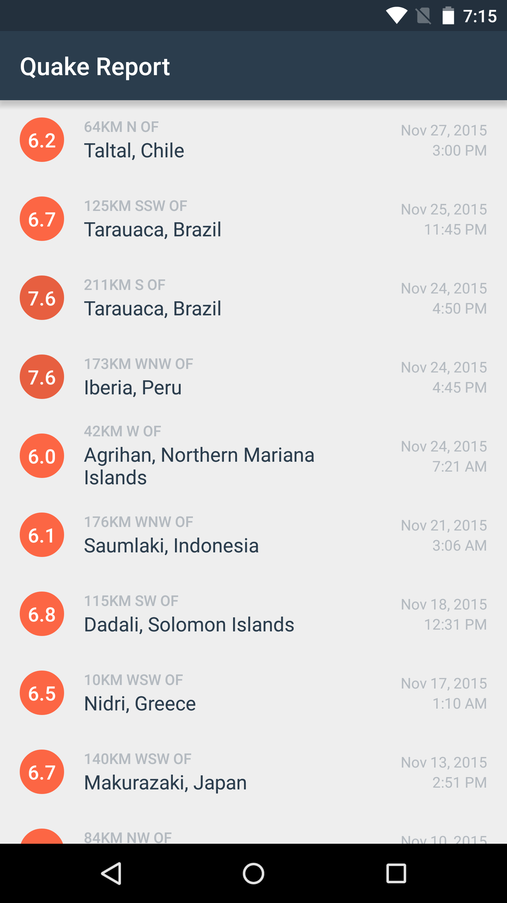
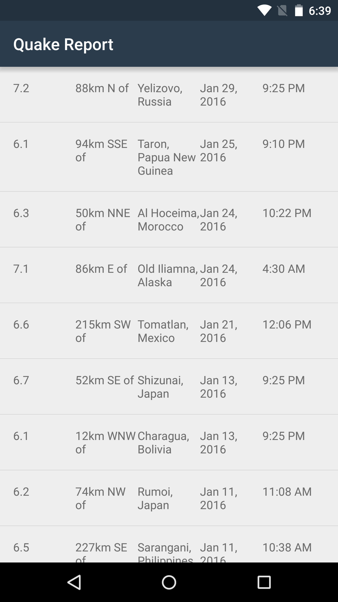

21. Split location into 2 TextViews
Split location into 2 TextViews
Question:
Now let’s move onto location. We can revisit our design mocks to see how the location of each earthquake should be displayed. The design displays proximity information on two lines; the first line shows the distance from the city specified in the second line. Since both lines of text appear in different font styles and font colors, it would be wise to use 2 different TextViews here.

Split one String into two separate Strings
If you look at the JSON response we receive from the USGS dataset, the String value from the “place” key comes in two forms:
“74km NW of Rumoi, Japan”
“Pacific-Antarctic Ridge”
The goal is to split the one location String into two Strings, so that they can be displayed in two separate TextViews. Since some locations may not provide details on a km distance from the location, we can use the phrase “Near the” as a substitute.
“74km NW of Rumoi, Japan” --> “74km NW of” and “Rumoi, Japan”
“Pacific-Antarctic Ridge” --> “Near the” and “Pacific-Antarctic Ridge”
To make it easier to refer to these separate Strings, we can call one String the primary location (i.e. “Rumoi, Japan” or “Pacific-Antarctic Rdige”) and the other String the location offset (“74km NW of” or “Near the”).
String Manipulation
In this task, you’ll practice manipulating Strings. This means learning to chop and piece together different parts of Strings, so that you can create a String in the format you desire. There is a whole bunch of methods offered by the String class in Java, to help you perform these tasks.
Many of them assume that you understand that a String is simply a sequence of characters. For a String like “hello”, the length is 5 characters long, and the first character “h” is located at index 0, “e” is located at index 1, “l” at index 2, and so on.
You may also see CharSequence in the documentation. A CharSequence is set of characters, and a String is a more specific type of CharSequence (the String class extends from CharSequence class). If a method requires a CharSequence as input, you can pass in a String.
Here are some additional methods you can call on a String object:
length() - Returns the number of characters in a String
contains(CharSequence cs) - Returns true or false depending on whether or not the input CharSequence (or input String) is contained within the original String
indexOf(String string) - Returns the index of where the input String first appears in the original String, or returns -1 if there input String is not found in the original String
split(String string) - Returns an array of String parts by splitting the original String at the locations specified in the input String.
substring(int start, int end) - Returns a new String that starts at the start index and goes up to (but doesn’t include) the end index.
Your Turn
In this coding task, you will split the location text into a location offset (“74km NW of “) and a primary location (“Rumoi, Japan”) and display the 2 Strings in 2 separate TextViews. If there’s no location offset, use “Near the”, along with the primary location (“Pacific-Antarctic Ridge”).
Since this logic is related to how the information is displayed in the UI, make the code changes in the EarthquakeAdapter class. You could technically make the code change in the Earthquake class, and ultimately it can come down to personal preference of the developer on where to put the code. In this case, we prefer to store the original location String in the Earthquake class, and keep all UI-related modifications to the earthquake data in the EarthquakeAdapter class. In the future, if our designer wants to display the whole location string together in the UI, we can leave our Earthquake class code as-is, and just modify the logic in the EarthquakeAdapter on how the location is displayed.
The app should look like the following screenshot when you’re done:

This is a tricky task that involves String manipulation with methods you may not have used before, but feel free to use trial and error. There are multiple ways to achieve the desired result. Good luck!
Start Quiz:
Solution:
To achieve the desired UI mocks, we should add another TextView to the list item layout. The 2 location TextViews have view IDs “@+id/primary_location” and “@+id/location_offset”, respectively.
In earthquake_list_item.xml:
<LinearLayout xmlns:android="http://schemas.android.com/apk/res/android"
xmlns:tools="http://schemas.android.com/tools"
android:layout_width="match_parent"
android:layout_height="match_parent"
android:orientation="horizontal"
android:padding="16dp">
<TextView
android:id="@+id/magnitude"
android:layout_width="0dp"
android:layout_height="wrap_content"
android:layout_weight="1"
tools:text="8.9" />
<TextView
android:id="@+id/location_offset"
android:layout_width="0dp"
android:layout_height="wrap_content"
android:layout_weight="1"
tools:text="30km S of" />
<TextView
android:id="@+id/primary_location"
android:layout_width="0dp"
android:layout_height="wrap_content"
android:layout_weight="1"
tools:text="San Francisco, CA" />
<TextView
android:id="@+id/date"
android:layout_width="0dp"
android:layout_height="wrap_content"
android:layout_weight="1"
tools:text="Mar 6, 2010" />
<TextView
android:id="@+id/time"
android:layout_width="0dp"
android:layout_height="wrap_content"
android:layout_weight="1"
tools:text="3:00 PM" />
</LinearLayout>Another change we need is to add “Near the” as a string resource for the locations that don’t have a location offset in km. This String doesn’t come from the original JSON response, and is added to satisfy our application’s UI design. We add the string in the res/values/strings.xml resource file, so we don’t hardcode English strings into the Java code.
In res/values/strings.xml:
<!-- Default text to show with the earthquake location ("Near the Pacific-Antarctic Ridge")
if no specific kilometer distance from the primary location is given [CHAR LIMIT=30] -->
<string name="near_the">Near the</string>Next, we need to modify the EarthquakeAdapter getView() method. At the bottom of this solution, there will be a link to the full EarthquakeAdapter class. As mentioned earlier, it’s okay if you didn’t implement this exactly like we did. Here’s one approach to creating the desired Strings.
First, we get the original location String from the Earthquake object and store that in a variable.
In EarthquakeAdapter getView():
String originalLocation = currentEarthquake.getLocation();We also create new variables (primary location and location offset) to store the resulting Strings.
String primaryLocation;
String locationOffset;We will be using the split(String string) method in the String class to split the original string at the position where the text “ of “ occurs. The result will be a String containing the characters PRIOR to the “ of ” text and a String containing the characters AFTER the “ of “ text. Since we’ll frequently need to refer to the “ of “ text, we can define a static final String constant (that is a global variable) at the top of the EarthquakeAdapter class.
In EarthquakeAdapter:
private static final String LOCATION_SEPARATOR = " of ";Let’s dive into the details of the split. If the original location String is “74km NW of Rumoi, Japan” and we split the string using the LOCATION_SEPARATOR, then we will get a String array as the return value. In the String array, the 0th element of the array is “74km NW” and the 1st element of the array is “Rumoi, Japan”. Note that we also add the “ of “ text back to the 0th element of the array, so the locationOffset will say “74km NW of “.
There is still the issue that some location Strings don’t have a location offset. Hence, we should check if the original location String contains the LOCATION_SEPARATOR first, before we decide to split the string with that separator. If there is no LOCATION_SEPARATOR in the original location String, then we can assume that we should we use the “Near the” text as the location offset, and just use the original location String as the primary location. Here’s the code for the logic we just discussed.
In EarthquakeAdapter getView():
if (originalLocation.contains(LOCATION_SEPARATOR)) {
String[] parts = originalLocation.split(LOCATION_SEPARATOR);
locationOffset = parts[0] + LOCATION_SEPARATOR;
primaryLocation = parts[1];
} else {
locationOffset = getContext().getString(R.string.near_the);
primaryLocation = originalLocation;
}Once we have the 2 separate Strings, we can display them in the 2 TextViews in the list item layout.
TextView primaryLocationView = (TextView) listItemView.findViewById(R.id.primary_location);
primaryLocationView.setText(primaryLocation);
TextView locationOffsetView = (TextView) listItemView.findViewById(R.id.location_offset);
locationOffsetView.setText(locationOffset);Then we’re done! The code for the full EarthquakeAdapter class is linked here.
The app should look like this:
Note: An alternative approach to creating the primaryLocation and locationOffset Strings is to use the indexOf(String string) method and the substring(int start, int end) methods. First you would find the index of the “ of ” text. Then you would take a substring of the original location String from the 0th index to the location after the “ of ” text to produce a String that says “74km NW of”. Then you would create another substring on the original String going from the starting index (where we last left off) to the end of the original String, to produce a String that says “Rumoi, Japan”. This approach involves meticulously keeping track of the right indices within the String, so that may get more complicated than using the String split() method. Regardless, either way would work and there are also probably multiple other approaches too!
INSTRUCTOR NOTE:
Hint: If you get stuck, check out this StackOverflow post.